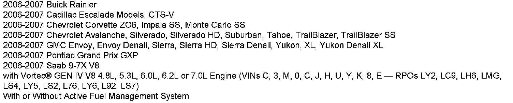
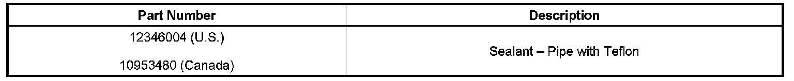
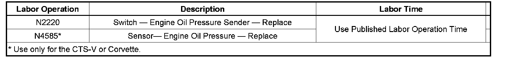
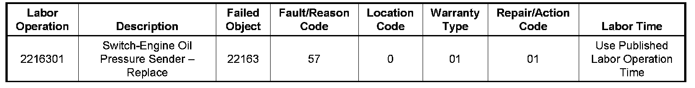

Engine - Low Oil Lamp ON/Oil Leaks
TECHNICALBulletin No.: 07-06-01-004A
Date: November 25, 2008
Subject:
All Vortec(R) GEN IV V8 Engines - LY2 LS4 LC9 LH6 LMG LY5 LS2 L76 LY6 L92 LS7, Low Oil Level Indicator Lamp On and/or Engine Oil Leak (Reseal Oil Pressure Sensor)

Models
Supercede:
This bulletin is being updated to include a labor operation number for CTS-V and Corvette models. Please discard Please discard Corporate Bulletin Number 07-06-01-004 (Section 06 - Engine/Propulsion System).
Condition
Some customers may comment on a low oil level indicator lamp on and/or engine oil leak. Upon further investigation, the technician may find that the oil leak is at the oil pressure sensor that is threaded into the valve lifter oil manifold (VLOM) assembly and/or engine valley cover.
Correction
If the engine oil leak was found to be at the engine oil pressure sensor, then remove the oil pressure sensor and reseal with a pipe sealant with Teflon or equivalent, P/N 12346004 (in Canada, P/N 10953480). Refer to Engine Oil Pressure Sensor and/or Switch Replacement in SI.

Parts Information
Warranty Information (excluding Saab U.S. Models)

For vehicles repaired under warranty, use the table.
Warranty Information (Saab U.S. Models)

For vehicles repaired under warranty, use the table.

Disclaimer